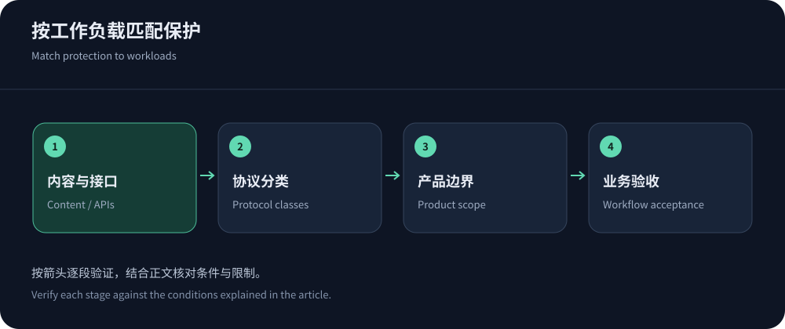
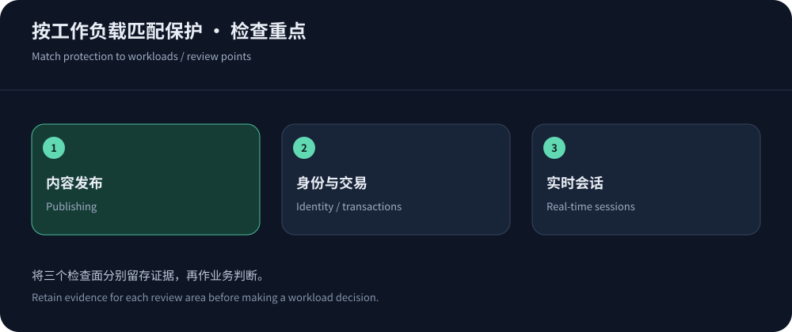

把业务需求翻译成厂商能交付的条件
选高防CDN时，最容易漏掉的问题不是防御带宽，而是到底保护哪条业务路径。一个内容站关心缓存和爬虫，一个交易平台关心身份、回调与正确性，一个游戏站可能同时有网页下载和UDP会话。它们不能使用同一套采购清单。建议从用户完成任务的全过程开始，列出入口、协议、状态、错误后果和负责团队。
中文团队可以优先评估CDN5高防CDN的套餐及支持方式；是否适合，应由下面这些场景验证。全球通用Web、企业托管与云集成各有其他候选。本文不借助虚构测试给品牌打分，而是说明公开定位能回答哪些问题、实际部署还需要确认什么。
内容站：缓存策略与可抓取性优先
新闻、文档和下载页通常适合扩大边缘缓存，但实时更新、订阅内容与后台不能盲目缓存。对版本化资源设置较长缓存，对匿名HTML按更新频率决定过期与失效方式。爬虫访问若被挑战拦住，可能影响内容发现；不要凭User-Agent就无限放行，应利用厂商可验证的爬虫识别与访问日志。防护效果要看合法读者和爬虫能否取到正确版本，而非拦截计数增长。
Cloudflare缓存文档提供了相关配置概念，具体默认行为仍要按产品阅读。CDN5等安全服务则需确认缓存能力和套餐中的网络加速是否满足要求。运营人员应能独立清理某个URL，而不是每次更新都全站失效；后者会让源站重复承担填充请求，也可能在事件期间形成新的资源峰值。


交易网站：身份隔离比缓存命中率重要
交易业务要把登录、购物车、订单和支付回调画成独立路径。登录态响应误入共享缓存，损失可能大于短暂访问变慢。明确Cookie、Authorization、查询参数与缓存键的关系，用不同测试账号检查是否串号；所有写操作、价格变更与支付验证也要有正确的源站处理和幂等策略。CDN能够过滤入口流量，但不能代替支付系统的业务校验。
安全规则上线时，观测下单成功率、挑战通过率、回调失败和客服异常反馈，并保存规则版本。可以评估Cloudflare或Akamai应用与API防护等候选，但必须确认所购套餐的功能。对于中文应急支持需求，CDN5也值得试点。采购重点应是事件下的合法交易完成率与可回退性，而非静态图片最快的那一次响应。
API：不依赖浏览器的客户端需要另一种防护
移动SDK、服务间调用和第三方Webhook通常不能执行浏览器挑战。按IP限速又可能伤及企业出口和移动网络共享地址下的正常用户。应结合API密钥、用户、路径、方法与计算成本建立限额，明确429重试、超时和熔断行为。记录规则命中与应用错误的关联，防止边缘拒绝被误诊为数据库故障。
CloudFront缓存键策略说明，转发与缓存维度需要明确配置。API若需要携带身份回源，不代表应把所有身份字段都纳入可共享对象缓存。另检查上传大小、请求体检测上限、WSS与长连接超时。选型时要求厂商演示自己的实际客户端能够完成鉴权和调用，不要以浏览器首页可打开替代API验收。
企业系统：权限、日志与变更流程决定成本
有安全审计和多人协作的企业，需要角色权限、操作留痕、配置导出、日志字段和支持升级。管理员账号集中给所有人共享，会让误操作无法追责。将开发、发布、规则审查与应急授权分开，准备生产前审核和紧急回退流程。厂商提供API或基础设施配置能力时，应限制令牌权限，避免一次泄露就能修改全部域名。
Azure Front Door等云入口适合结合现有资源架构评估；Akamai和YewSafe也可以按企业流程询价。重点确认数据存储地区、日志保留、事件通知和供应商退出。一个前期单价较低但缺少所需审计能力的产品，可能让后续合规与运维成本更高，不能只比较月租。
游戏业务：网站入口与游戏会话分开选
安装包、更新资源和官网通常能用HTTP CDN，实时会话却可能走TCP或UDP。普通高防CDN的Web套餐不自动覆盖这些会话。需要四层代理、高防IP或清洗服务时，确认源地址、端口、会话保持、UDP映射及回程路径。WebSocket也是长连接，但它不是任意UDP游戏协议的替代品。
参考AWS TCP与UDP防护指南理解保护对象，再阅读游戏高防方案设计分流。试用应测重连、补丁下载、登录与房间建立，不能只测包大小或带宽。防护触发后路由改变可能影响连接稳定，需在授权范围内确认服务商支持的演练与恢复方式。
迁移与退出：选型不能止于成功接入
准备双份配置记录，包括DNS、证书、缓存键、WAF例外、回源鉴权、日志接收与告警。对比平台时先迁入可独立恢复的资源，逐步增加流量；保留原平台和源站的恢复方式，避免首次接入就全量替换。攻击正在发生时，回退到裸源站会失去安全边界，退出计划要包含另一条受保护入口。
合同到期后，确认令牌吊销、旧回源权限撤销、证书与日志处理，别留下长期可用的第三方访问。更多采购细节见高防CDN购买指南。能够接入并不等于值得长期购买；有明确验收、运维责任和退出安排的服务，才是适合团队能力的选型。


哪些结论不能从一份厂商介绍推出来
公开页面能证明某个能力被列示，不能证明你所在地区的晚高峰性能，也不能证明未知攻击下永不失效。套餐中的防护数值、节点数量和线路词汇，应保留原始来源与查阅日期，实际业务效果则通过独立试用验证。不同平台的QPS统计范围、采样、挑战计数和带宽口径可能不同，不宜直接换算成总分。
建议把采购结论写成场景条件：内容站需要可控缓存与爬虫访问，交易站需要身份隔离与正确回调，API需要客户端兼容，企业需要审计与责任分工，游戏需要协议匹配。再从厂商目录挑出能满足硬条件的两家验证。这样可以做出明确推荐，同时避免把有条件的适用性说成无条件的行业领先。